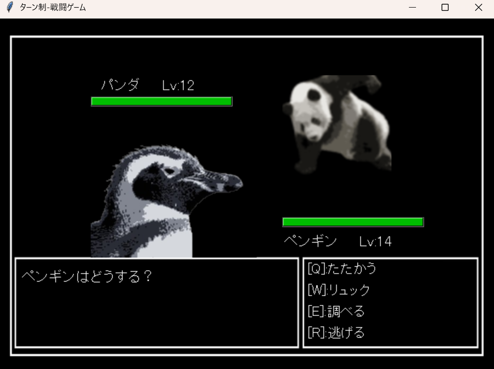
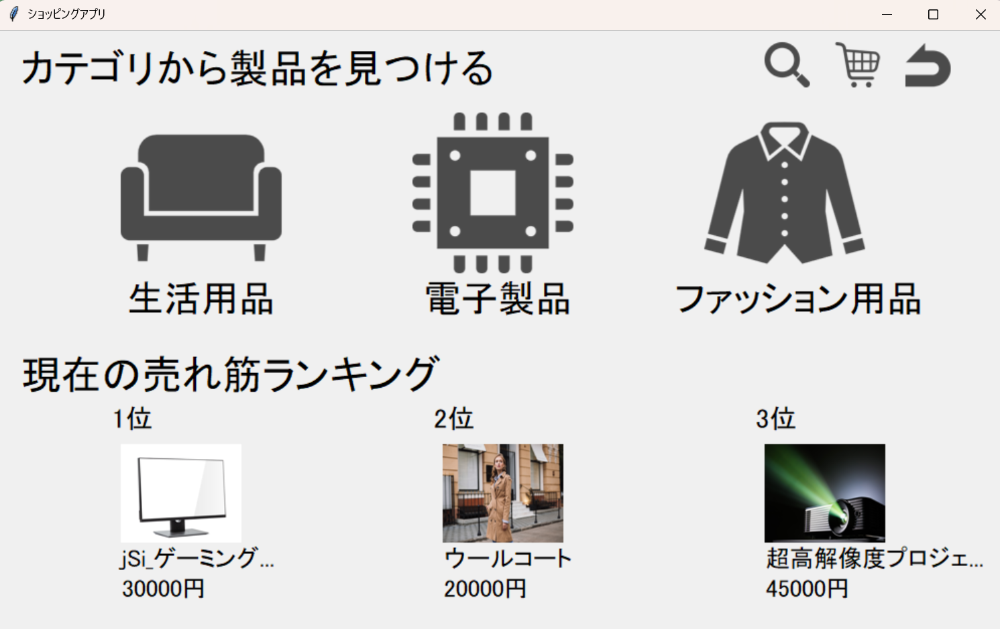
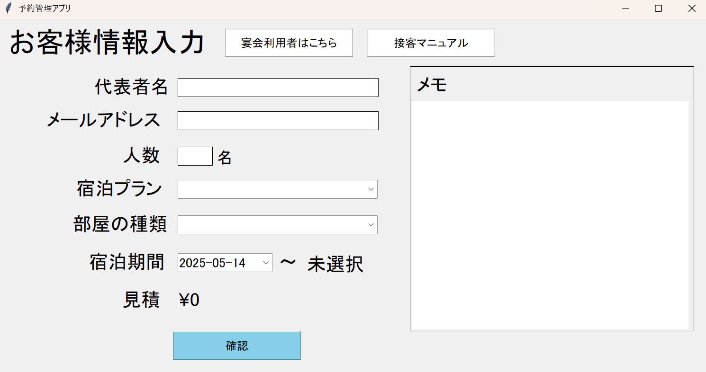
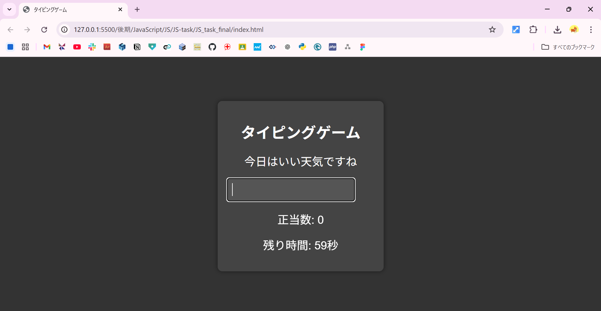
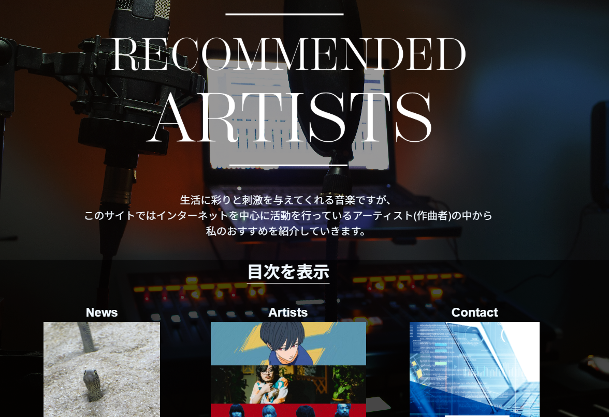
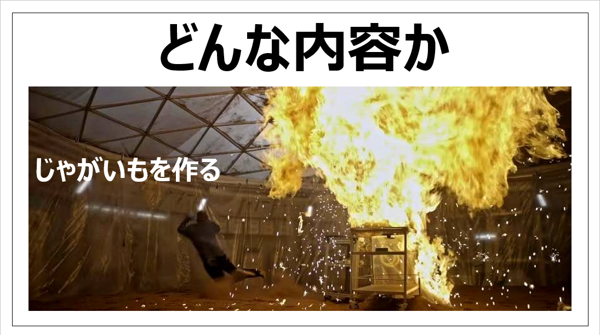

Study
学び
ローカルアプリ開発

ターン制戦闘ゲーム
初めて開発した小規模GUIアプリケーション。
キーボード操作をメインとしてレトロなフリーゲームを意識して開発を行った。

某サイト風ECアプリ
MySQLを活用することでユーザー登録、ログイン、商品の登録を実装し、より実践的な開発を行うことができた。

予約管理システム
個人開発ではなくGitHubを用いたチーム開発で作成した。toBを意識して設計を行うことで利用者目線で思考する力を身に着けることができた。
Webアプリ開発

タイピングゲーム
初めてローカルではなくブラウザ上で動くアプリの開発。課題点としてはアプリ特有のシステムなどがなく、汎用的な点が挙げられる。

「好きなもの」紹介サイト
好きなアーティストを紹介するサイトを作成した。できるだけモノトーンにすることでシンプルかつお洒落な見た目になるよう意識して取り組んだ。
プレゼンテーション

「好きなもの」をプレゼン
授業内で自分の好きなものを紹介するPowerPointを作成し、クラスメイト全体に対して紹介した。当時紹介したのは映画「オデッセイ」。